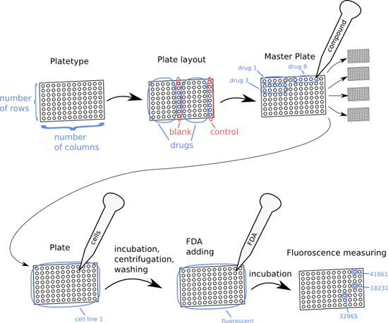

Brunn is a laboratory information system for Bioclipse.

A plate type defines the size, number of columns and rows, of a plate. A plate layout defines where on the plate the controls and the compounds are to be placed. Based upon this plate layout a number of equal plates are made, conforming to a so-called master plate that defines which drugs are placed in which wells. Each one of these plates is seeded with one cell type and incubated. After incubation, the plate is centrifuged and washed, and fluorescein diacetate is added. Then the plate is washed again, and incubated once more, before fluoroscence generated from fluorescein diacetate transformed into a fluorescent by cells with intact cell membranes is measured with a microplate fluorometer. The measurements are imported into Brunn and can be viewed in the Plate editor.